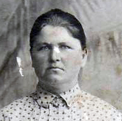
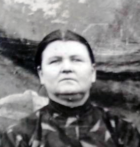

Продолжительность жизни: 99
Социальное происхождение: раскулаченный
была выслана на Cоловки вместе с сыном Иваном, откуда их привёз дядя Фёдор тайком.
Отец: Кононович Роман
Мать: Кононович Елизавета
Муж: Герилович Иван Викентьевич (1881 - 28.07.1931)
Сын: Герилович Анисим Иванович (1904 - 08.12.1987)
Сын: Герилович Василий Иванович (23.12.1914 - 01.06.1993)
Сын: Герилович Георгий Иванович (20.04.1916 - 08.12.2016)
Дочь: Злобина (Герилович) Мария Ивановна (24.08.1922)
Сын: Герилович Иван Иванович (20.12.1924)
Дочь: (Герилович) Александра Ивановна
Дочь: Плюсина (Герилович) Марина Ивановна
Дочь: (Герилович) Ефросинья Ивановна
Родилась: 19.12.1878. Отец: Кононович Роман. Мать: Кононович Елизавета.
Вышла замуж. Муж: Герилович Иван Викентьевич.
Родился сын: Герилович Анисим Иванович, 1904. Отец: Герилович Иван Викентьевич.
Родился сын: Герилович Василий Иванович, 23.12.1914. Отец: Герилович Иван Викентьевич.
Родился сын: Герилович Георгий Иванович, 20.04.1916. Отец: Герилович Иван Викентьевич.
Родилась дочь: Злобина (Герилович) Мария Ивановна, 24.08.1922. Отец: Герилович Иван Викентьевич.
Родился сын: Герилович Иван Иванович, 20.12.1924. Отец: Герилович Иван Викентьевич.
Родилась дочь: (Герилович) Александра Ивановна. Отец: Герилович Иван Викентьевич.
Родилась дочь: Плюсина (Герилович) Марина Ивановна. Отец: Герилович Иван Викентьевич.
Родилась дочь: (Герилович) Ефросинья Ивановна. Отец: Герилович Иван Викентьевич.
Умерла: 1978.
. . |